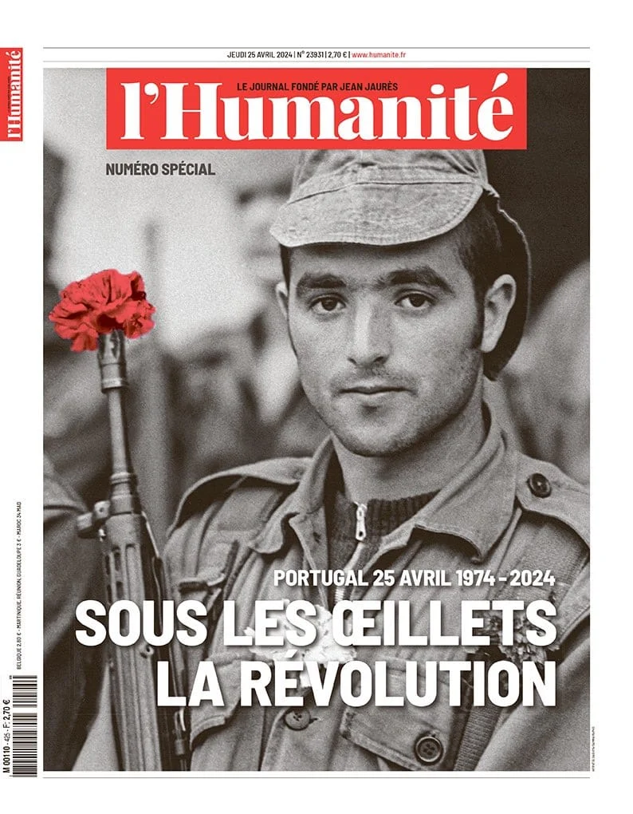
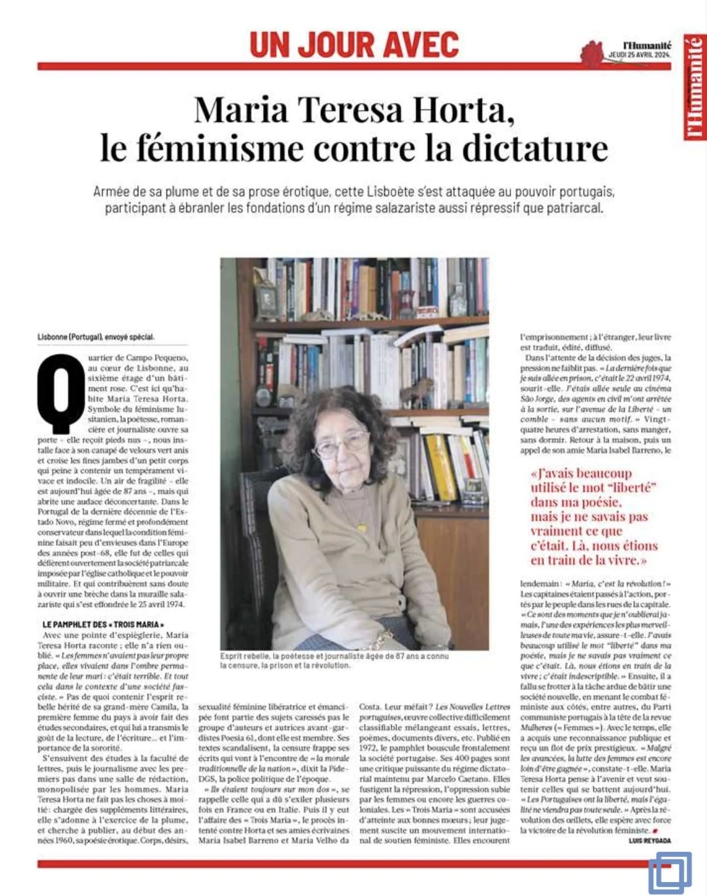

Mémoire
Il y a cinquante ans, la Révolution des Œillets
Date indiquée par Facebook · 26 avril 2024
Repères éditoriaux
Nous avons relayé la une de L’Humanité sur la Révolution des Œillets et l’article consacré à Maria Teresa Horta, dont le combat féministe s’est aussi exercé contre la dictature.
Texte conservé avec la publication
Il y a 50 ans
#RevolutionDesOeillets


Sources
Archive rouge · export Facebook · AR-0002-FB-01411
À lire aussi · L'élan de la Libération de Paris · Le lien d’origine